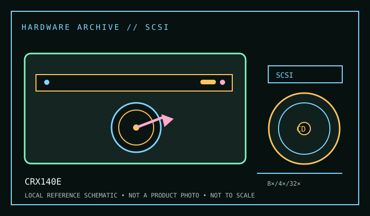

[ CD-R AND CD-RW DRIVES // IDENTIFIED MODEL ]
Sony CRX140E
Internal ATAPI CD-R/RW recorder rated 8× CD-R write, 4× CD-RW rewrite and 32× CD read. Check the full model code: Sony used related CRX variants with different interfaces or bundled software.

IDENTIFICATION: Confirm the manufacturer label, complete model suffix, interface and firmware revision against the cited manual before installation or archival use. Ratings are maximums; actual performance depends on media, mode, host and software.
Documented specifications
| Subcategory | CD-R and CD-RW drives |
|---|---|
| Exact model | CRX140E |
| CD-R write | 8× |
| CD-RW rewrite | 4× |
| CD-ROM / CD read | 32× |
| Recorded/read formats | Writes CD-R and CD-RW; reads CD-ROM/CD-DA and supported CD-R/RW media. Additional XA, multisession, Video CD or Photo CD access depends on disc format and host software; test the original application workflow. |
| Recording modes | Disc-at-Once, Track-at-Once and multisession support depends on the recording package and media. The maximum 8×/4× ratings are not guaranteed on every blank disc or in every recording mode. |
| Interface / mechanics | Internal IDE/ATAPI, half-height 5.25-inch class; host connection uses the IDE interface rather than SCSI. Set the drive select jumper according to the host channel and installation guide. |
| Host and operating-system compatibility | Requires an IDE/ATAPI-capable host and compatible optical/recording software. For legacy Windows installations follow the Sony setup guide; current operating systems may read the drive through a bridge but do not necessarily support period recording utilities. |
| Firmware / revision notes | Firmware and OEM bundle support vary by CRX140E revision. Record the complete model/firmware string and use only a matching Sony/OEM image. Do not assume that another CRX140 suffix has the same firmware or host interface. |
Compatibility & preservation notes
- Requires an IDE/ATAPI-capable host and compatible optical/recording software. For legacy Windows installations follow the Sony setup guide; current operating systems may read the drive through a bridge but do not necessarily support period recording utilities.
- Firmware and OEM bundle support vary by CRX140E revision. Record the complete model/firmware string and use only a matching Sony/OEM image. Do not assume that another CRX140 suffix has the same firmware or host interface.
- For an imaging or recording session, log the exact drive and firmware, interface/controller, operating system, application version, media identifier, selected mode and any read/verification errors. Keep checksummed image copies and logs.
- Handle discs at the edge or center hole and store in cases in a cool, dry place away from direct sunlight. Avoid adhesive labels, abrasive cleaning and undocumented solvents or polishing.
Read support is not write support. A format listed for this drive does not guarantee every disc revision or copy-protection scheme will work.
Sources
- Sony CRX140E user manual, Internet ArchiveArchived user-manual record for setup and operation; match the exact model and region.
- Sony CRX140E manual, ManualsBase archiveAlternate archived manual reference for the model’s installation and use.
- Library of Congress — CD-R and DVD-R/RW longevityRecordable optical-media preservation guidance, separate from drive specifications.